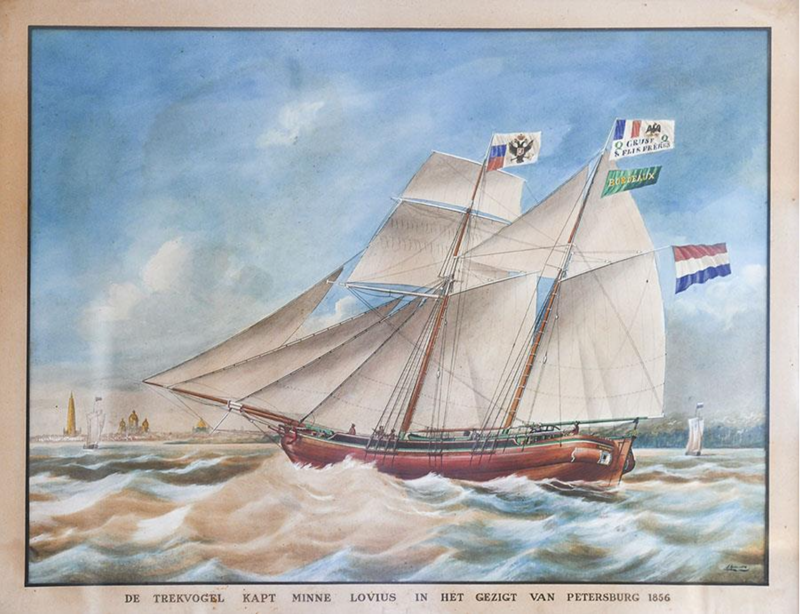

Ce livre passionnant raconte l’histoire de notre famille et de tous les acteurs du monde du vin à Bordeaux, autour du négoce, et des propriétés.
Nous lançons une souscription du 15 septembre au 20 octobre pour
déterminer et financer le tirage de cet ouvrage.
Le prix spécial de souscription est de 40€ par exemplaire (disponibilité garantie).
(En dehors de la période de souscription, prix public de 48€ (mais
disponibilité limitée et pas assurée)
Veuillez vous inscrire en clicquant le bouton ci-bas afin de recevoir les informations pour souscrire
Nous comptons sur votre enthousiasme à souscrire et faire souscrire en nombre autour de vous
pour assurer la meilleure diffusion au sein de nos familles et amis.
Merci de penser à ceux de votre entourage qui ne reçoivent pas de mails.
Dans l’attente de vos nombreuses commandes,
Avec toute notre amitié,
Daniel Cruse, Xavier Cruse, Jean-Louis Pacquement, Patrick Perrin

Après quatre années de travail intense avec notre auteur, le professeur Bonin,
nous aboutissons à un livre très complet (300p de texte) et largement illustré (200
photos),
rempli d’anecdotes et de découvertes provenant des très nombreuses archives publiques et
familiales.
En 1815, Herman Cruse, originaire du Schleswig-Holstein,
alors âgé de 25 ans,
débarque à Bordeaux dans le quartier des Chartrons.
Deux siècles se sont écoulés depuis et sa famille est toujours active dans le monde du
vin à Bordeaux !
Cette « épopée », traversée de périodes fastes, de guerres,
de crises et de renaissances mérite d’être racontée à ses nombreux
descendants
et à tous ceux qui s’intéressent au vin de Bordeaux,
pour leur faire découvrir ces différentes générations d’entrepreneurs
qui ont construit notre histoire avec ses grands épisodes :
1819-1910
l’ascension éclair du duo Cruse et Hirschfeld,
puis la création de Cruse & Fils Frères et la consécration,
avec l'acquisition de prestigieux vignobles bordelais,
1910-1973
la période chaotique de la traversée des deux guerres mondiales,
puis le renouveau des trente glorieuses,
1974-2022
la chute de l’entreprise familiale de négoce, et le rebond actuel
de plusieurs descendants propriétaires gérants d’une dizaine de vignobles ...
... Voilà ce que raconte ce livre passionnant
L’histoire de notre famille et de tous les acteurs du monde du vin à Bordeaux,
autour du négoce, des propriétés,...
C’est un beau livre qui vous plaira, nous n’en doutons pas !
Le livre sera édité et disponible avant Noël (une bonne idée de cadeau)
Ce livre est essentiellement destiné à la famille et à nos/vos amis proches.
Pour ceux qui auront souscrit, nous prévoyons 2 évènements de présentation du
livre :
au château du Taillan pour les girondins
à Paris pour les autres.
Deux bonnes occasions de se retrouver en famille et amis et de récupérer votre commande !